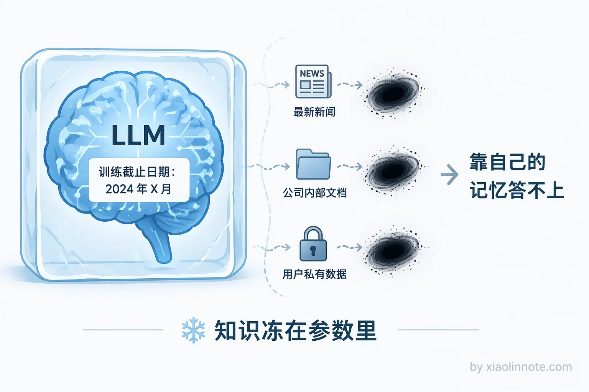
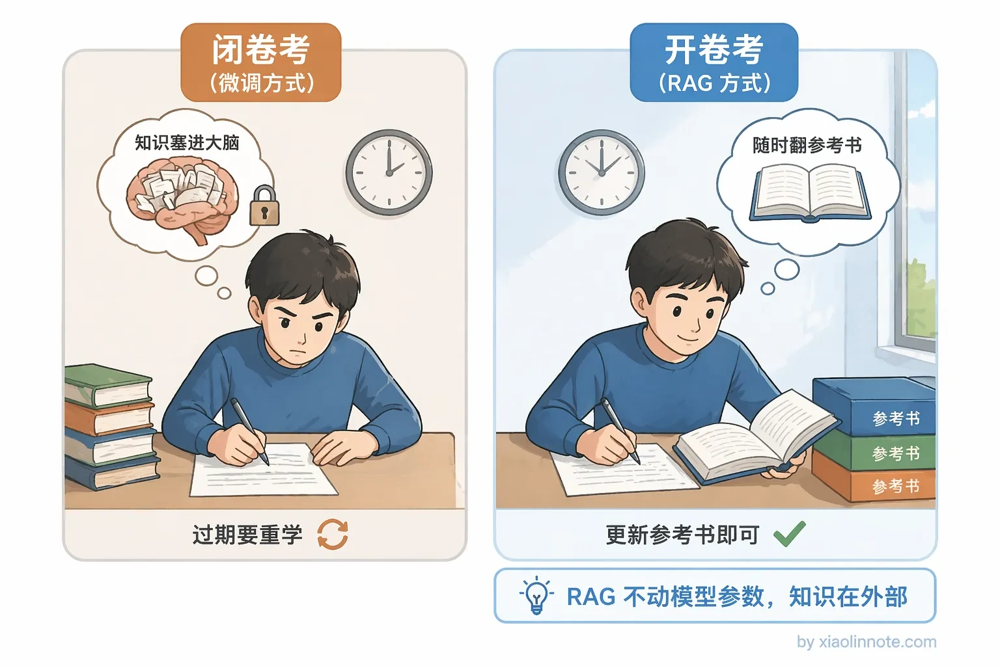
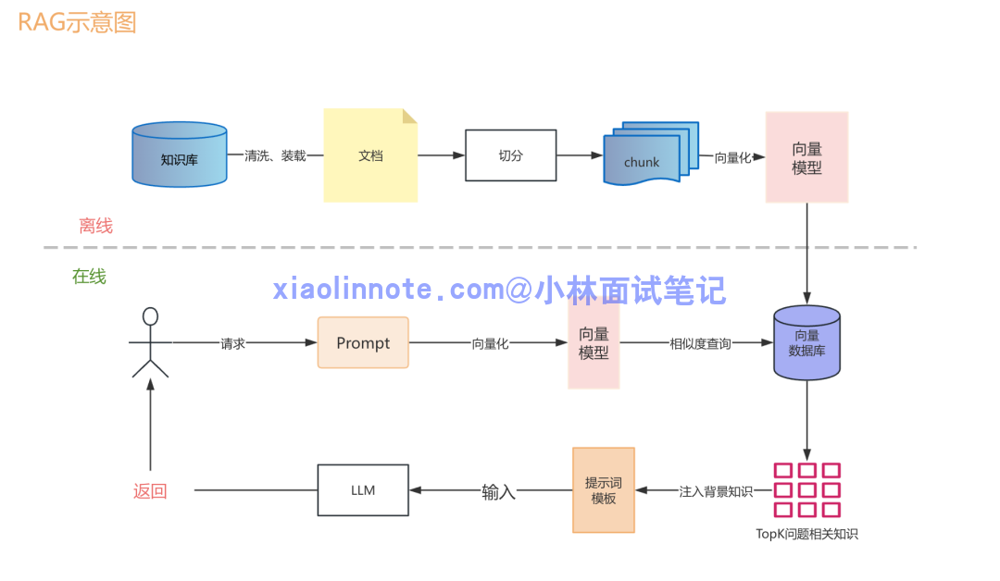
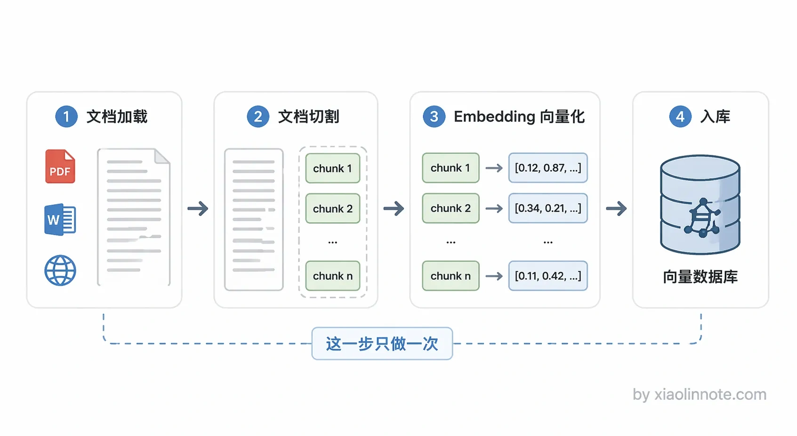
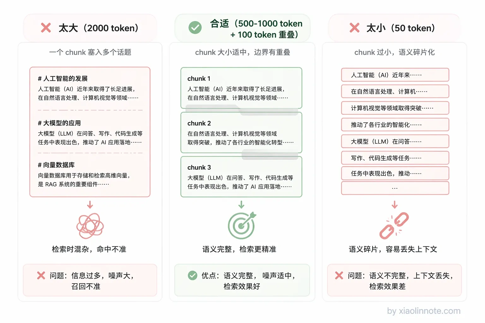
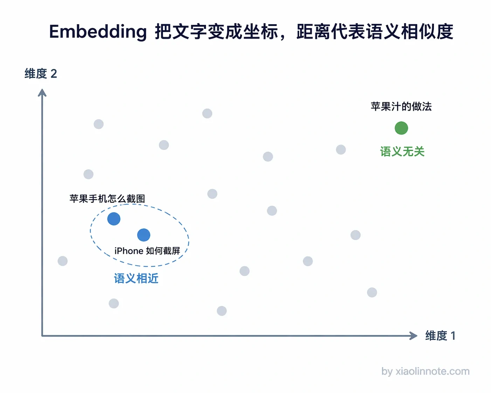
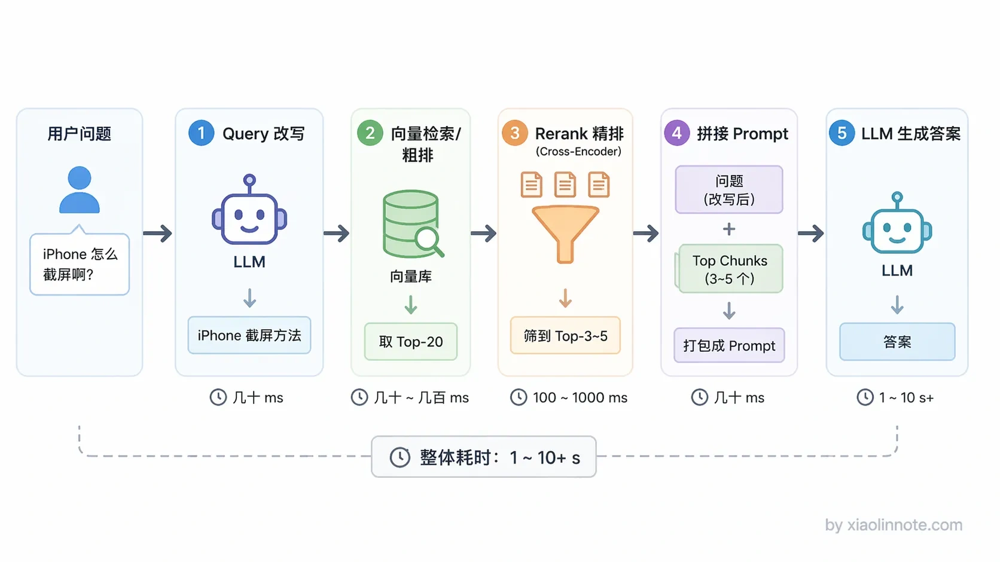
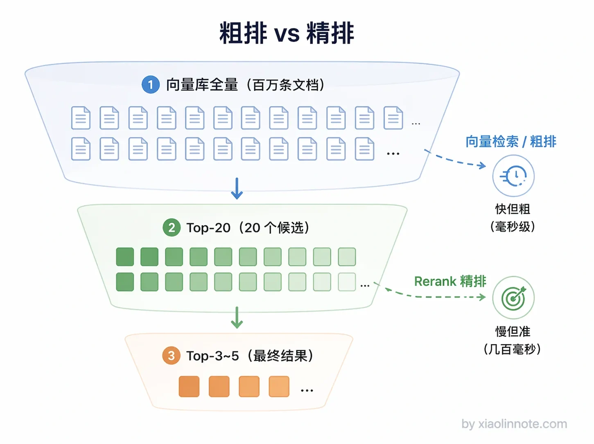
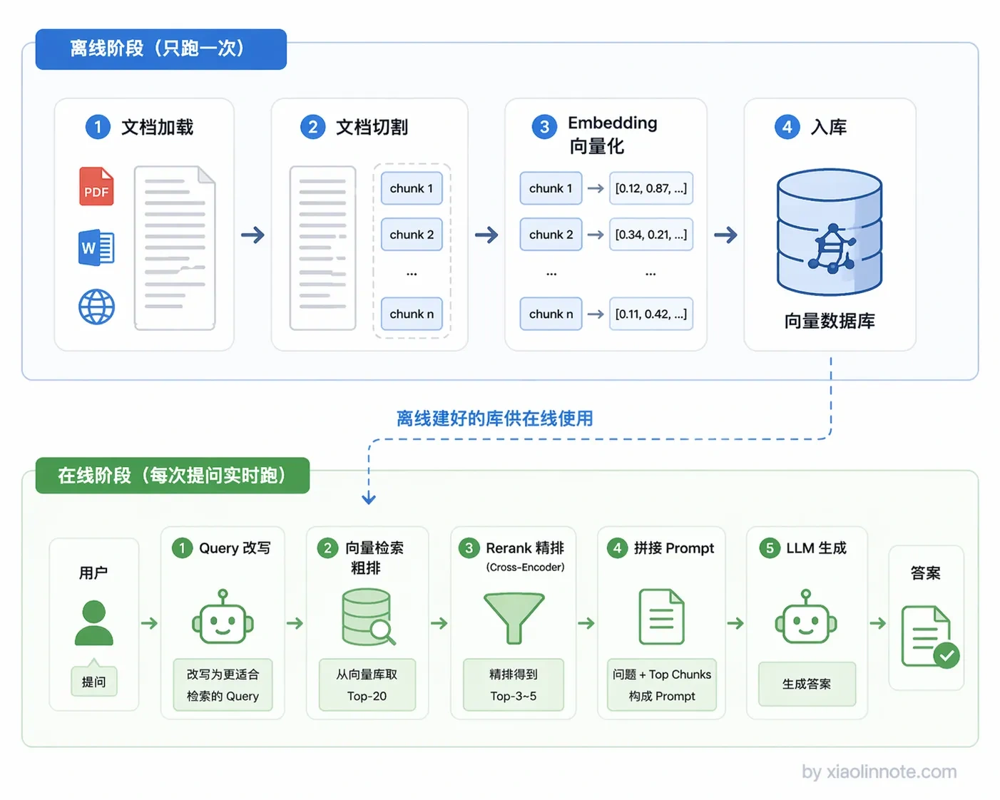

什么是 RAG？详细描述一个完整 RAG 系统的详细工作流程？
企业关系分析是一个典型候选场景：股权、任职、投资和竞争关系可被结构化查询。但遍历耗时取决于图规模、查询、索引和部署，不能直接承诺“几秒钟就出来”。
校订说明：本页是面试题汇总索引，具体学习内容以同目录下编号章节为准。文中出现的规模、延迟、阈值和成本数字只能作为示例，必须结合模型/版本、数据、过滤条件、硬件和业务 SLO 重新评测；RAG 也不保证自动消除幻觉。建议按“数据与权限 → 召回 → 证据/重排 → 生成 → 引用与拒答 → 线上评估”的链路阅读。 第二层是端到端评估，可用 Ragas 等工具做自动化辅助，再用人工标注校准；应分别观察答案是否支持、是否相关、是否完成任务、是否安全，以及拒答是否合适。自动评估分数受定义和评判模型影响，不能直接当作事实真值。
flowchart LR
A[数据源/版本/ACL] --> B[解析与切分]
B --> C[Embedding/词法/图索引]
D[用户 Query] --> E[解析与约束]
E --> F[多路召回]
C --> F
F --> G[过滤/融合/Rerank]
G --> H[证据化生成]
H --> I[引用/校验/拒答]
I --> J[质量、延迟、成本与安全指标]
J -.回归与更新.-> B
J -.回归与路由.-> F👔面试官：来说说什么是 RAG？详细描述一下一个完整 RAG 系统的工作流程。
🙋♂️我：RAG 我知道，就是一个搜索 API，用户输入关键词，去数据库里把匹配的文档捞出来返回给用户，就这样。
👔面试官：……你这是 Elasticsearch 吧？RAG 里的「G」是 Generation，生成呢？LLM 在哪？你把最核心的环节整个漏掉了。
🙋♂️我：哦哦，我重新说。RAG 就是把公司文档丢给大模型，让它自己学进去，下次用户问问题它就能直接答了。
👔面试官：你这说的是微调（Fine-tuning），不是 RAG。RAG 根本不会去改模型的参数，你是怎么把这两个完全不同的东西搞混的？
🙋♂️我：好吧，那 RAG 就是先检索再生成嘛，把数据库查出来的东西扔给大模型就行了，应该没什么复杂的吧？
👔面试官：「扔给大模型」？原始文档直接扔？一篇几万字的 PDF 你怎么扔？文档切割（Chunking）怎么切？Embedding 向量化怎么做的？离线阶段和在线阶段分别做了什么？粗排和精排（Rerank）的区别是什么？一个都说不出来是吧？回去好好补补再来吧。
好吧，这段面试属实是踩了所有雷。不过别慌，下面我把 RAG 的知识点掰开揉碎了讲一遍，保证你看完不会再被问住。
💡 简要回答
RAG 全称是 Retrieval-Augmented Generation，就是检索增强生成。我理解它解决的核心问题是，LLM 的知识在训练完之后就固定了，遇到私有数据或者最新的信息它就答不上来。RAG 的做法是在生成答案之前，先去外部知识库里检索相关内容，然后把检索结果和用户的问题一起交给 LLM，让它基于这些上下文来回答。本质上就是给 LLM 开了一个开卷考试的口子，不用再靠死记硬背了。
📝 详细解析
LLM 的「知识冻结」困境
在聊 RAG 之前，得先搞清楚一个问题：LLM 为什么需要 RAG？它的知识到底差在哪？
你想想看，一个 LLM 训练完之后，它的知识就冻住了，训练数据截止日期之后发生的事情它一无所知，你们公司内部的文档它更不知道。就好比一个人高考之后再也不看新闻，你问他今天的股价，他怎么可能答得上来？

那能不能靠微调来更新知识呢？理论上可以，但微调成本高、耗时长，最关键的是，知识一旦写进模型参数，以后想更新就得重新训练一遍。这就好比你为了让一个人记住一条新闻，让他重新上了一遍大学，太不划算了。
RAG 走了一条完全不同的路：不把知识塞进模型参数里，而是在用户提问的时候，实时去外部知识库检索，把找到的相关内容直接放进 prompt 给 LLM 读。LLM 本身有很强的阅读理解能力，就算它之前不「知道」这段内容，只要你把它放在上下文里，它就能基于这段内容来回答问题。这就是 RAG 的核心思想：既然模型记不住，那就给它开卷考试。

一个完整的 RAG 系统分离线和在线两个阶段，下面我挨个讲。

离线阶段：提前把知识准备好
离线阶段的目标很明确：在用户提问之前，就把知识库建好。这一阶段只做一次，建好了后面反复用。

第一步是文档加载。把各种格式的原始数据读取进来，可以是 PDF、Word、Markdown、网页、数据库记录等。这一步通常用 LlamaIndex 或 LangChain 提供的 DocumentLoader 来做，它们支持几十种数据源格式，基本上你能想到的格式都有现成的加载器。
接下来是文档切割（Chunking）。你可能会问，为什么不把整篇文档直接存进去检索，非要切成一块一块的？原因有两个。一是向量模型有输入长度限制，一般最多几百到几千个 token，整篇文档根本塞不进去。二是更关键的，如果把一整篇文章压缩成一个向量，细节信息会被「平均掉」。这就好比你问「这道菜怎么样」，对方回答「中国菜整体偏咸」，具体哪道菜咸、咸到什么程度，全丢失了。
所以要把文档切成适合检索与阅读的片段（chunk）。大小、重叠和结构边界没有跨数据集的固定答案；可先以一个候选范围做基线，再用 Recall@K、引用支持率、上下文长度、P95 延迟和成本评估。必要时采用父子块或章节上下文，让检索粒度与阅读粒度分离。

然后是整个离线阶段最核心的一步，Embedding（向量化）。Embedding 模型会把一段文字转成一个高维数字向量，比如一个 1536 维的浮点数列表。这东西听起来很玄，但其实你可以把它理解成一个「语义坐标系」。什么意思呢？语义相似的文本，它们在这个坐标系里的位置就靠近；语义不相关的，位置就离得远。
你可能会好奇，模型凭什么能做到这件事？答案是训练。Embedding 模型在训练时看了海量文本，学会了识别哪些句子表达的是同一个意思，然后用对比学习等方法不断调整权重，让「意思相近的文本」在输出空间里靠近、「不相关的文本」离远。所以不是模型天生懂语义，而是训练让模型「把相近的拉近、无关的推远」，这种空间结构一旦形成，查询时就能用距离计算来找语义相近的内容了。
比如「苹果手机怎么截图」和「iPhone 如何截屏」，这两句话用词完全不一样，但意思一样，所以它们的向量会非常接近。Embedding 做的事情，就是把「意思」编码成数学坐标，意思越相近，坐标越靠近。这就是语义检索的基础，它不是在匹配关键词，而是在比较「意思相不相近」。

最后一步是入库，把每个 chunk 的向量、原文、文档版本、租户/权限和来源位置一起存入可检索存储。向量数据库、关系型数据库扩展和搜索引擎都可能提供向量索引；具体性能、规模和过滤能力要按版本、硬件、并发与 SLO 实测。
到这里，离线阶段就完成了。知识库已经建好，等着在线阶段来检索。
在线阶段：用户提问时实时检索
在线阶段是每次用户提问时实时执行的，对响应速度有要求。

第一步是Query 处理。用户的提问可能口语化、带指代或多个约束；对简单明确的问题，直接检索可能更快，对模糊问题才考虑规则、澄清或 Query 改写。改写必须保留实体、版本、时间、否定和权限约束，不能凭空补事实，并保留原始 Query 作为回退。
然后是向量检索（粗排）。把 Query 转成与文档索引兼容的向量，在权限/版本过滤下召回候选。延迟取决于索引、规模、过滤、并发、网络和硬件，不能从“百万量级”推导固定毫秒数；ANN 也可能混入噪音或漏召回，因此要结合词法召回、去重和评测。
接下来是Rerank（精排）。Reranker（常见实现包括 Cross-Encoder）对有限候选重新打分排序，再结合多样性、版本、权限和上下文预算选择证据。候选数和最终保留数应由 Recall@K、引用支持率、P95/P99 与成本曲线决定，不应固定为 Top-20 再保留 Top-3～5。

最后是生成，把用户问题 + 精排后的 chunk 拼成 prompt，交给 LLM 生成最终答案。Prompt 里通常会明确告诉 LLM「只根据提供的资料回答，资料里没有就说不知道」，这样能有效抑制 LLM 瞎编的倾向。
串起来看完整流程
整个流程串起来是这样：离线阶段把文档切割成 chunk，转成向量存进数据库，这一步只做一次；在线阶段每次用户提问时，先把问题向量化，再去数据库里检索，经过精排后拼进 prompt，最终由 LLM 生成答案。两个阶段分工明确，离线负责建库，在线负责检索和生成。

RAG 的价值包括把外部知识、模型生成与知识更新解耦，并为答案提供可追溯证据；更新仍需解析、嵌入、索引可见性、权限和版本发布，成本并非为零。引用可帮助审计，但不保证答案正确；是否采用 RAG 要与微调、工具调用、结构化查询等方案按需求比较。
🎯 面试总结
回到开头那段面试，现在我们再来看，该怎么回答这个问题才不会踩雷。
面试官问「什么是 RAG」，你不能只说「检索+生成」五个字就完了，得说清楚三件事。第一，RAG 解决的是什么问题？LLM 知识冻结、无法覆盖私有数据和最新信息，这是 RAG 存在的理由。第二，RAG 和微调的本质区别是什么？微调是把知识写进模型参数，RAG 是把知识放在外部实时检索，不动模型本身。这两点搞清楚了，面试官就知道你不是背定义的。
面试官可能追问「完整工作流程」。可以按离线与在线讲：离线负责解析、切分、Embedding、权限/版本元数据和索引发布，并在变更时增量或版本化更新；在线负责 Query 解析、权限过滤、多路召回、融合/Rerank、证据化 Prompt、生成、引用/拒答校验。每个环节是否启用，都应由质量、延迟、成本和风险决定。
最后，如果能再补一句 RAG 的核心价值，知识可热更新、答案可溯源，面试官基本就没什么好追问的了。